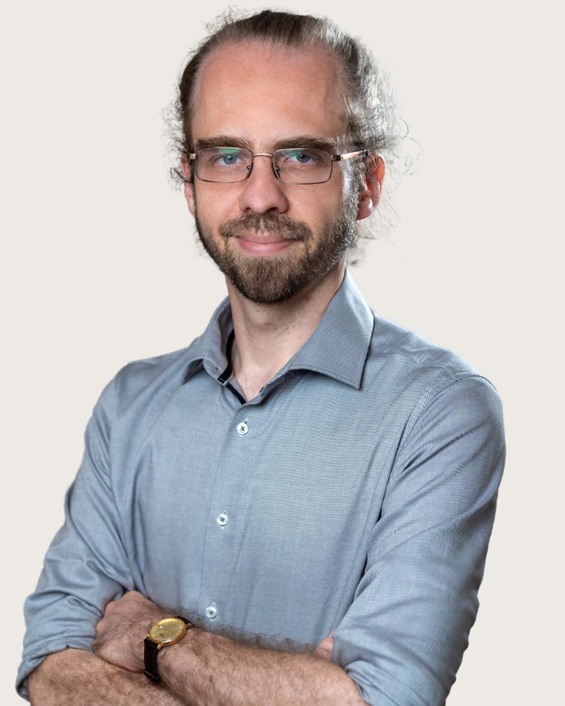

Szakpszichológus-jelölt
Szatmári
Zsolt
Pszichológus, doktorjelölt, egészségpszichológiai szakpszichológus jelölt, jungi analitikus jelölt, csoportanalitikus csoportvezető jelölt
Fogadó kolléga: Vajas Zsuzsanna, pszichológus asszisztens. +36 30 961 1364, hétköznap 9-15. Ő segít, ha nem biztos, hogy Szatmári Zsolt a megfelelő választás.
Mélyen hiszek abban, hogy az élet megpróbáltatásaival nem egyedül kell szembenéznünk. Mint megannyi ékkő tükröződünk egymásban, ezért ha eléggé figyelünk a másikra, tényleg meg akarjuk hallani amit mond, ez sikerülni is fog. Ezáltal, közös erővel, pozitív irányba változhat életünk, túllendülhetünk a nehézségeinken, és talán mi magunk is többek, jobbak, igazán önmagunk lehetünk.
Hiszek a mindannyiunkban megbúvó, legkülönfélébb helyzetekben jelen levő növekedési lehetőségekben. Így olykor magukkal a nehézségekkel, fájdalmas külső és belső eseményekkel, veszteségekkel való szembenézés esélyt is jelenthet a bennük rejlő, korábban kiaknázatlan létlehetőségek kibontakoztatására. Így jelentést találhatunk a körülöttünk és bennünk zajló történésekben, ezáltal, egy-egy sötétebb alagúton keresztüljutva, teljesebb, boldogabb, szeretettelibb életet élhetünk.
Hiszem azt is, hogy pszichológusként felelősségem, hogy szakmai fejlődésemen túlmenően folyamatosan dolgozzak saját magamon is, megismerjem saját lelkem működését, hiszen csak így tudok másoknak hitelesen segíteni. Ennek megfelelően én magam is rendszeresen önismereti terápiára járok.
És nem utolsó sorban abban hiszek, hogy minden emberi lénynek, így Önnek is megvan a joga a boldogságra. Ez az út, amelyen szeretném kísérni, és hozzásegíteni ahhoz, hogy a legteljesebb és legsajátabb értelemben megélhesse azt, aki Ön igazán lenni hivatott!
Amiben segítek
Szatmári Zsolt saját megfogalmazásában
Ha jelenlegi élethelyzetében elakadt, nem látja a kiutat, de változtatni szeretne
Ha munkahelyi vagy magánéleti stresszel, vagy hirtelen megváltozó élethelyzettel szembesül
Ha párkapcsolatában problémák, nehézségek merülnek fel, amik már-már megoldhatatlannak tűnnek
Ha fontos döntés előtt áll, melynek ugyanakkor tart a lehetséges következményeitől
Ha fontos személyt vesztett el, pl. konfliktus vagy haláleset miatt
Ha baleset vagy testi betegség miatt megváltozott az élete
Ha konfliktuskezelési nehézségei vannak
Ha úgy érzi, nem igazán értik meg az Ön számára fontos emberek
Ha magányos
Ha önbizalomhiánytól szenved
Ha önmegvalósítási nehézségei, esetleg megvalósulatlan művészi ambíciói vannak, amik az élet forgatagában valahogy mindig háttérbe szorulnak
Ha életvezetési nehézségei vannak, vagy úgy érzi, kicsúszik az idő a kezei közül
Ha kiégéssel küzd, vagy tart tőle
Ha kételyei, nehézségei merültek fel nemi identitásával, hitbéli meggyőződésével, vagy a társadalomban, munkájában, családjában betöltött szerepével kapcsolatban
Képzés és szakmai út
A képzések és a szupervízió az akkreditált szakképzőhely rendjében folynak. Mit jelent ez Önnek
Iskolai végzettség
Módszertani képzések
Egyesületi tagságok
Önismeret, sajátélmény
Tanítómesterek
Akiknél a módszereket tanulta
- Dr. Unger Klára, kiképző jungi analitikus pszichoterapeuta
- Dr. Sarungi Emőke, kiképző csoportanalitikus pszichoterapeuta, egyetemi oktató
- Dr. Terenyi Zoltán, kiképző csoportanalitikus pszichoterapeuta
- Dr. Krékits József, kiképző daseinanalitikus pszichoterapeuta, egyetemi oktató
- Dr. Papp-Zipernovszky Orsolya, egészségpszichológiai szakpszichológus, egyetemi oktató
- Dr. Sallay Viola, egészségpszichológiai szakpszichológus, egyetemi oktató
- Dr. Rafael Beatrix, klinikai szakpszichológus, egyetemi oktató
- Rácz Zsuzsanna, klinikai szakpszichológus
- Dancsó Angéla, klinikai szakpszichológus
- Dr. Fábiánné Páger Anna, mentálhigiénés szakember
Rólam mondták
Kliensek visszajelzései, a hozzájárulásukkal
Nagyon inspiráló számomra Zsolt hozzáállása az emberekhez és a pszichológiához. Leginkább az a befogadó kíváncsiság és őszinte megismerési vágy, mellyel a világot szemléli, és amely véleményem szerint elengedhetetlen a pszichológusi munkában.
Azért jó vele beszélgetni, mert egyrészt érzed, hogy tényleg figyel, másrészt finoman rámutat az ellentmondásokra, így vele beszélgetve nem tudtam a szokásos mellébeszéléseimmel élni. Így vált lehetővé, hogy igazán fontos dolgokra rájöjjek magammal, vagy épp a helyzetemmel kapcsolatban
Végtelenül lelkiismeretes, valóban szeretne segíteni. Emellett széles látókörű és olvasott, folyamatosan bővíti szaktudását.
Nagyon elfogadó, nem fog elítélni azért, mert elmeséled neki a szokatlan dolgaidat. Amikor mondott valami olyasmit, hogy érdekes, tőle elhittem, hogy nem csak úgy mondja, hanem valóban érdekli.
Ha inkább mást keresne
Három kolléga hasonló területekkel. A teljes regiszterben 37 szakember szűrhető.
Következő lépés
Időpont Szatmári Zsoltnál
Írjon nekünk, vagy hívja ügyfélszolgálatunkat hétköznap 9 és 15 óra között. Az első alkalom 50 perc, díja 18-25 ezer forint alkalmanként. Ha Szatmári Zsolt naptára tele van, megmondjuk, ki tud hasonló területen fogadni.